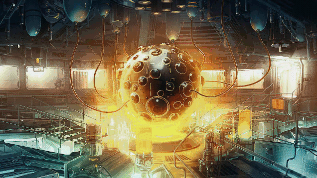

Hva vil det løse?
Vil vi slutte å si: "energikrevende løsninger". Og heller si "løsninger som er fornuftige anvendbare; med så å si endeløse fornybare og super rimelige energikilder." Hva med; "hva skal vi bygge og oppfinne nå som energibehovet er løst for godt"?
Og ikke glem; sammen med det bedre batteriet. Eller et årelangt batteri. Et batteri som varer 1 år av gangen i elbilen og smarttelefonen.
Sjekk ut: Det bedre batteriet.
Det som også er et stort pluss er at mest sannsynligvis vil det neste store innen energi-kilder være det man på godt mot kaller klima vennlige energi kilder. Altså energi som ikke slipper ut klima gasser som er skadelige mot planeten og på de bebodde områdene.
Hvilke energikilder/metoder er så kraftfulle at de gir oss så Ren, som så Rimelig og Endeløs energi?
- Fusion(10 år unna?)
OG
- - Det Fornybare(disse kildene med energi er her, vi må forbedre og implementere rundt omkring på denne planeten). Et annet spørsmål er om det vil dukke opp nye og supereffektive fornybare energi metoder?.
Blir verdens ferskvanns-forsyninger løst av; energi produsert til en pris tilnærmet lik 0kr?(klima vennlig energi selvfølgelig, fordi det er der all innsats innen utvikling og forskning ligger per dags dato).
Drikkevannet og saltlake (Brine):
Når energi problemstillingen løses; hvor man får mye Ren energi ut til en ganske tilnærmet Rimelig penge; løses dermed verdens rent drikke-vanns-forsyninger. Vi snakker så billig energi at det er på grensen av gratis, sammenlignet med det vi har i dag.
MEN; ved å ta i bruk så mange avsaltnings stasjonener verden rundt på et tidspunkt hvor vi har "ubegrenset" med energi. Så vil vi få et nytt problem; Brine. Et bi-produkt som kommer av prossesen med å gjøre om saltvann til ferskvann. Hvis man ser at konstruksjonen av disse anleggene øker rundt omkring vil dette vil mest sannsynligvis øke i trakt med med at de kjører dette bi-produktet rett ut i havet. Dette er et Stort problem med stor S.
Hva gjør de i dag for å ikke å kjøre ut Brine tilbake i havet?
Fordampningsdammer og dype brønninjeksjoner betraktes som en av de mest kjente alternativene for å disponere konsentrert saltlake(brine) på riktig måte. Fordampningsdammene fungerer slik at man kjører saltlaken ut i menneske konstruerte dammer(hvor konsentrasjonen holder seg på et sted) og deretter fordamper vannet ved at solen varmer og man sitter igjen med saltkrystaller, som igjen kan brukes i andre industrier. Dype brønninjeksjoner fungerer ved at man kjører saltlaken ned i bakken, dypt ned, slik at den ikke bringes opp til overflaten.
Men det er kostnadene ved de ulike metodene for å disponere saltlaken som gjør at man ofte velger den som er rimeligst; å det er å kjøre det rett ut i havet. Hvor den store konsentrasjonen av saltinnholdet gjør det verre for livet under vann i de områdene hvor dette skjer; forestill deg da hvordan dette ville ha foregått hvis "de fleste land" i verden får tilgang på endeløs energi som betyr så og så endeløs tilgang til drikkevannet fra havet; som igjen betyr at problemet med bi-produktet må løses; hvis ikke kjører nok de aller fleste dette med billigst måte; rett tilbake hvor det kom fra.
Da gjør vi det bedre for oss ja, men samtidig 10 ganger verre for havet, livet der og de som er avhengig av dette økosystemet; og ja det er alle på denne planeten.
Tilbake til endeløse energi kilder og den økonomiske siden:
Den/de vil føre til en kollaps av dagesn metoder og priser. Om det skjer på en drastisk måte kan spekuleres i; om det skulle dukke opp en energi metode neste år; som ville kunne ta over eller gjort det slik at all kull, gass+ annet fossilt, som produserer strøm i dag blir overflødig. Jo, da ville det skjedd noe uforutsett og da ville markedene reagert like drastisk som når/hvis denne nye metoden for å produsere energi skulle gjøre sin debut.
Det som er sikkert er at det vil påvirke aksjemarket innen energi-produserende selskaper med de underliggende leverandører av ulike tjenester, varer/materialer og ikke minst hvor strøm blir solgt på tvers av handels-markdene.
Oppsiden av det hele er at det vil føre til bedre vilkår for den som bruker strømmen, altså forbrukeren og de mange ulike bransjene rundt omkring de internasjonale markedene. Det betyr rimeligere strøm eller kanskje(det er sannsynlig) at den kanskje blir gratis(i det store og hele). Fordi energien som produseres er så effektiv og kostnadene ved produksjonen av strøm er mininale sammenlignet med dagens situasjon. Jeg spekulerer i om at kostnaden ved å produsere energi ved bruk av Et fusion energi kraftverk, som kan dekke behovet til en by på størrelse med Paris, vil komme på et kostnadsnivå lik et mindre kraftverk, og se på kostnaden av å designe og konstruere et stort kraftverk; enten det er en stor dam eller hundrevis av vindturbiner eller solcellepaneler.
Fornybar energi som vindturbiner og solcellepaneler er ikke negativt i den forstand, men hva skal til for at de mange myndighetene beslutter seg for å gjøre om energi sektoren i landet til fordel for klimaet?(De landene som gir ut mest klima-gasser blant andre).
Det er at løsningene er gode og overbevisende nok; som fuison kraft. Ved denne metoden i bruk ville man kunne ha snudd det hele med klimaproblemet på hodet. Men det er et tidsspørsmål om når denne teknologien blir klar for bruk. Vi kan følge med, studere, bidra, være med og i mellomtiden støtte oppunder andre gode alternativer til klima-vennlige energikilder.
